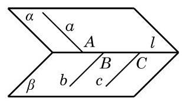
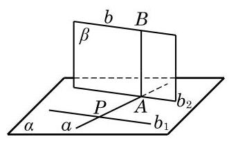
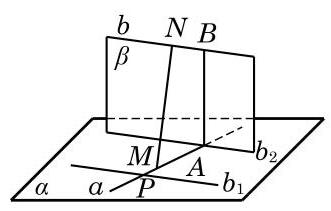
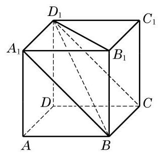
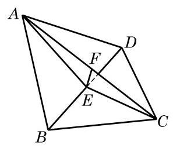
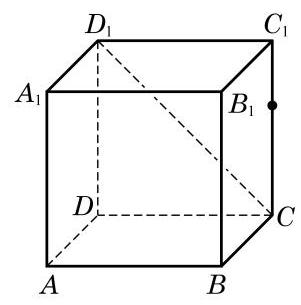
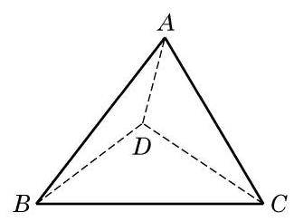
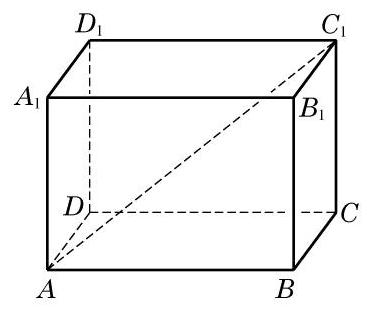
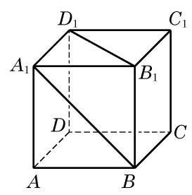

前面已经定义了两条异面直线所成的角, 但这显然还不足以完全确定两条异面直线的相互位置. 例如, 在图 10-5-1 中, 为一个二面角,在平面 上作一直线 垂直于棱 ,垂足为 ; 而在平面 上分别作两条直线 及 垂直于棱 ,垂足分别为 . 由 ,异面直线 所成的角与 所成的角是相等的,但 及 离 的距离却不一样. 该如何定义两条异面直线的距离呢?

图 10-5-1
在图 10-5-1 中,是否可以用线段 和 来分别表示异面直线 之间及异面直线 之间的距离呢? 要想这样做, 首先需要保证用这样的方式所定义的距离是唯一确定的, 也就是说, 要证明下面的定理.
定理 对于任意给定的两条异面直线, 存在唯一的一条直线与这两条直线都垂直并且相交.
证明 先证明存在性. 如图 10-5-2,在直线 上任取一点 ,过 作直线 ,使得 . 设 及 所确定的平面为 , 则 . 过直线 作平面 垂直于平面 ,并相交于直线 . 由 ,有 . 又因 ,故 . 设 与 的交点为 ,在平面 上过 作直线 垂直于 . 因为平面 垂直于平面 , 所以直线 垂直于平面 ,从而直线 . 这样,直线 与异面直线 都垂直且相交.

图 10-5-2
已知: 直线 是异面直线.
求证: 存在唯一的直线与 都垂直且相交.

图 10-5-3
再证明唯一性. 如图 10-5-3,假设除了 ,还有一条公垂线 ,使得 ,垂足分别为 . 因为 , 所以 ,而 与 是平面 上的两条相交直线,所以 . 又 ,所以 ,从而 共面,而这与 是异面直线矛盾.
求两条异面直线之间的距离是立体几何中比较困难的问题, 其难点主要在于要找两条异面直线的公垂线段. 回顾上述定理的证明过程,如图 10-5-2,因为 ,异面直线 与 之间的距离等于公垂线段 的长,也等于直线 到平面 的距离,所以在求两条异面直线的距离时, 可以先过其中一条直线作一个平面平行于另一条直线, 从而把线线间的距离转化为线面间的距离.

图 10-5-4
例题 1
例 1 如图 10-5-4,已知正方体 的棱长为 .
(1)求异面直线 与 之间的距离；
(2)求异面直线 与 之间的距离.
答案与解析收起 / 展开
解(1)因为 ，所以 就是异面直线 与 的公垂线段,从而所求的距离为 .
(2)因为 ，而 在平面 上，所以 平面 . 又因为 在平面 上,所以异面直线 与 之间的距离就等于直线 到平面 的距离, 即等于点 到平面 的距离,其值为 .
例题 2
例 2 如图 10-5-5,在空间四边形 中, ,二面角 的平面角等于 . 求直线 与 之间的距离.

图 10-5-5
答案与解析收起 / 展开
解 取 的中点 . 因为 ,所以 ,从而二面角 的平面角为 ,且 垂直于平面 . 在 中,作 ,垂足为 , 则 为异面直线 与 的公垂线段. 由 ， ，可得 . 因为二面角 的平面角 ，所以由余弦定理，得 . 由三角形面积公式,得 . 所以, ,即为所求异面直线的距离.
练习 10.5
练习10.5 · 1
- 如图,设正方体 的棱长为 1,求下列异面直线之间的距离:
(1) 与 ；
(2) 与 .

(第 1 题)
答案与解析收起 / 展开
练习10.5 · 2
- 求两条异面直线之间的距离问题, 除了可转化为求直线与平面间的距离, 还可以转化为求两个平行平面之间的距离. 请给出两个平行平面的构造方法, 并说明为什么两条异面直线之间的距离就等于这样两个平行平面之间的距离.
答案与解析收起 / 展开
- 为异面直线,过 分别作两个平行平面 . 现假设 为异面直线的公垂线段,且 ,则 ,所以 ,即 也是 与 的距离.
练习10.5 · 3
- 设两条电线所在的直线是异面直线,它们的距离是 ,所成的角是 . 已知这两条电线上各有一点,距离公垂线的垂足都是 . 求这两点之间的距离.
答案与解析收起 / 展开
- 或者 . 提示: 分两点在公垂线的同侧和异侧进行讨论研究.
习题 10.5
A 组
习题10.5A · 1
- 已知一平面平行于两条异面直线, 一直线与两异面直线都垂直, 那么这个平面与这条直线的位置关系是 ( )
A. 平行; B. 垂直;
C. 斜交; D. 不能确定.
答案与解析收起 / 展开
习题10.5A · 2
- 在棱长为 的正方体 中,求:
(1) 与 之间的距离；
(2) 与 之间的距离.
答案与解析收起 / 展开
习题10.5A · 3
- 如图,在四面体 中,已知所有棱长都为 . 求两异面直线 与 之间的距离.

(第 3 题)
答案与解析收起 / 展开
习题10.5A · 4
- 在 的二面角的棱上,有两个点 分别是这个二面角的两个面上垂直于 的线段. 已知 . 求 的长.
答案与解析收起 / 展开
习题10.5A · 5
- 若两异面直线 所成的角为 ,过空间内一点 作与直线 所成角均是 的直线 ,则所作直线 的条数为( )
A. 1 ; B. 2 ;
C. 3; D. 4.
答案与解析收起 / 展开
习题10.5A · 6
- 如果两个平面分别垂直于两条异面直线中的一条, 求证: 这两个平面的交线与这两条异面直线的公垂线平行或重合.
答案与解析收起 / 展开
- 已知 与 是异面直线, 是异面直线的公垂线, . 求证: .
证明: 过点 作 . 因为 ,所以 . 因为 是 与 的公垂线,故 ,所以 垂直于 所确定的平面. 又 , 则 . 同理 . 所以 垂直于 所确定的平面,故 .
B 组
习题10.5B · 1
- 在直二面角的棱上有 两点, 和 分别在两个面上,并且都垂直于棱 . 若 ，求 的长及 和 之间的距离.
答案与解析收起 / 展开
习题10.5B · 2
- 如图，在长方体 中， . 求异面直线 与 之间的距离.

(第 2 题)
答案与解析收起 / 展开
习题10.5B · 3
- 如图,已知正方体 的棱长为 1 . 求异面直线 与 之间的距离.

(第 3 题)
答案与解析收起 / 展开
- . 提示: 转化成两个平行平面之间的距离进行求解.